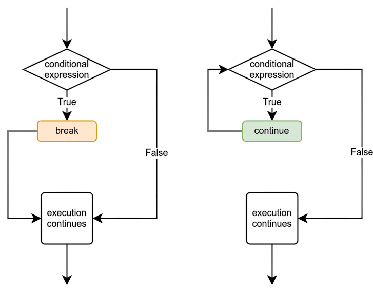

Més bucles
Objectius d'aprenentatge
- Utilitzar el comandament
breakper sortir de bucles - Controlar el flux dels bucles amb el comandament
continue - Crear i entendre bucles niats (bucles dins de bucles)
- Utilitzar variables d'ajuda per controlar la iteració dels bucles
- Implementar algorismes complexos amb múltiples bucles
El comandament break
Ja has vist abans el comandament break. Es pot utilitzar per aturar immediatament l'execució d'un bucle. Un exemple típic d'on s'utilitza és una situació en què el programa demana a l'usuari una entrada, i l'execució només s'acaba quan es rep una entrada específica.
La mateixa funcionalitat es pot aconseguir sense el comandament break, utilitzant una condició adequada. Els dos programes següents demanen a l'usuari que introdueixi nombres i calculen la suma dels nombres fins que l'usuari escriu -1.
1a versió amb el comandament break
suma = 0
while True:
numero = int(input("Escriu un nombre, -1 per sortir: "))
if numero == -1:
break
suma += numero
print(f"La suma és {suma}")2a versió sense el comandament break
suma = 0
numero = 0
while numero != -1:
numero = int(input("Escriu un nombre, -1 per sortir: "))
if numero != -1:
suma += numero
print(f"La suma és {suma}")Els dos programes tenen les mateixes sortides donades les mateixes entrades.
Escriu un nombre, -1 per sortir: 2 Escriu un nombre, -1 per sortir: 4 Escriu un nombre, -1 per sortir: 5 Escriu un nombre, -1 per sortir: 3 Escriu un nombre, -1 per sortir: -1 La suma és 14
Així doncs, els dos programes són pràcticament idèntics funcionalment. Tot i això, el primer mètode sovint és més fàcil, ja que la condició numero == -1 només apareix una vegada, i la variable numero no s'ha d'inicialitzar fora del bucle.
El comandament break i una condició adequada també es poden utilitzar conjuntament en un bucle while. Per exemple, el següent bucle es repeteix mentre la suma dels nombres sigui com a màxim 100, però també s'atura si l'usuari escriu el nombre -1.
suma = 0
while suma <= 100:
numero = int(input("Escriu un nombre, -1 per sortir: "))
if numero == -1:
break
suma += numero
print(f"La suma és {suma}")Escriu un nombre, -1 per sortir: 15 Escriu un nombre, -1 per sortir: 8 Escriu un nombre, -1 per sortir: 21 Escriu un nombre, -1 per sortir: -1 La suma és 44
Escriu un nombre, -1 per sortir: 15 Escriu un nombre, -1 per sortir: 8 Escriu un nombre, -1 per sortir: 21 Escriu un nombre, -1 per sortir: 45 Escriu un nombre, -1 per sortir: 17 La suma és 106
En el primer exemple, el bucle s'atura perquè l'usuari escriu el nombre -1. En el segon exemple, s'atura perquè la suma dels nombres supera 100.
Com sempre en programació, hi ha moltes maneres d'arribar a la mateixa funcionalitat. El següent programa és funcionalment idèntic a l'anterior:
suma = 0
while True:
numero = int(input("Escriu un nombre, -1 per sortir: "))
if numero == -1:
break
suma += numero
if suma > 100:
break
print(f"La suma és {suma}")El comandament continue
Una altra manera de modificar com s'executa un bucle és amb el comandament continue. Aquesta fa que l'execució del bucle salti directament a l'inici, on es comprova la condició del bucle. Després, l'execució continua normalment comprovant la condició.

Per exemple, el següent programa suma nombres introduïts per l'usuari, però només inclou aquells que són menors que 10. Si el nombre és 10 o més gran, l'execució salta a l'inici del bucle i el nombre no s'afegeix a la suma.
suma = 0
while True:
numero = int(input("Escriu un nombre, -1 per sortir: "))
if numero == -1:
break
if numero >= 10:
continue
suma += numero
print(f"La suma és {suma}")Escriu un nombre, -1 per sortir: 4 Escriu un nombre, -1 per sortir: 7 Escriu un nombre, -1 per sortir: 99 Escriu un nombre, -1 per sortir: 5 Escriu un nombre, -1 per sortir: -1 La suma és 16
Bucles niats
Igual que les estructures condicionals if, els bucles també poden estar inclosos dins d'altres bucles. Per exemple, el següent programa utilitza un bucle per demanar a l'usuari que introdueixi nombres. Després utilitza un altre bucle dins del primer per fer un comptatge enrere des del nombre donat fins a 1:
while True:
numero = int(input("Escriu un nombre: "))
if numero == -1:
break
while numero > 0:
print(numero)
numero -= 1Escriu un nombre: 4 4 3 2 1 Escriu un nombre: 3 3 2 1 Escriu un nombre: 6 6 5 4 3 2 1 Escriu un nombre: -1
Quan hi ha bucles niats, les comandes break i continue només afecten el bucle més intern al qual pertanyen. L'exemple anterior també es podria escriure així:
while True:
numero = int(input("Escriu un nombre: "))
if numero == -1:
break
while True:
if numero <= 0:
break
print(numero)
numero -= 1Aquí, la segona comanda break només atura el bucle intern, que s'utilitza per imprimir els nombres.
Variables d'ajuda amb bucles
Ja hem utilitzat variables d'ajuda que s'incrementen o decrementen a cada iteració d'un bucle. El següent programa imprimeix tots els nombres parells superiors a zero fins a arribar a un límit establert per l'usuari:
limit = int(input("Escriu un nombre: "))
i = 0
while i < limit:
print(i)
i += 2Escriu un nombre: 8 0 2 4 6
La variable d'ajuda i s'inicialitza a 0 abans del bucle i augmenta de dos en dos a cada iteració.
Quan s'utilitzen bucles niats, de vegades cal una variable d'ajuda separada per al bucle intern. El programa següent imprimeix una "piràmide de nombres" basada en un nombre donat per l'usuari:
numero = int(input("Escriu un nombre: "))
while numero > 0:
i = 0
while i < numero:
print(f"{i} ", end="")
i += 1
print()
numero -= 1Escriu un nombre: 5 0 1 2 3 4 0 1 2 3 0 1 2 0 1 0
En aquest programa, el bucle extern utilitza la variable numero, que disminueix en 1 a cada iteració fins a arribar a 0. La variable d'ajuda i s'inicialitza a 0 just abans d'entrar al bucle intern, cada vegada que es repeteix el bucle extern.
El bucle intern utilitza la variable i, que augmenta en 1 a cada iteració. El bucle intern es repeteix fins que i és igual a numero i imprimeix cada valor d'i en la mateixa línia, separats per un espai. Quan el bucle intern acaba, el comandament print() del bucle extern crea una nova línia.
A mesura que el valor de numero disminueix, la quantitat de repeticions del bucle intern també ho fa. Cada línia de nombres és més curta que l'anterior, i així s'obté la forma de piràmide.
Exercici 1: Multiplicació
Escriu un programa que demani a l'usuari un nombre enter positiu. El programa ha d'imprimir una llista d'operacions de multiplicació fins que ambdós operands arribin al nombre introduït per l'usuari.
Escriu un nombre: 2 1 x 1 = 1 1 x 2 = 2 2 x 1 = 2 2 x 2 = 4
Escriu un nombre: 3 1 x 1 = 1 1 x 2 = 2 1 x 3 = 3 2 x 1 = 2 2 x 2 = 4 2 x 3 = 6 3 x 1 = 3 3 x 2 = 6 3 x 3 = 9
Exercici 2: Primeres lletres de les paraules
Escriu un programa que demani a l'usuari que introdueixi una frase. El programa ha d'imprimir la primera lletra de cada paraula de la frase, cada lletra en una línia separada.
Escriu una frase: Humpty Dumpty assegut a una paret H D a a u p
Exercici 3: Factorial
Escriu un programa que demani a l'usuari que introdueixi un nombre enter. Si l'usuari introdueix un nombre igual o inferior a 0, l'execució s'acaba. En cas contrari, el programa ha d'imprimir el factorial del nombre.
El factorial d'un nombre consisteix a multiplicar el nombre per tots els enters positius menors que ell mateix. En altres paraules, és el producte de tots els enters positius menors o iguals al nombre. Per exemple, el factorial de 5 és 1 * 2 * 3 * 4 * 5 = 120.
Exemples de sortida
Escriu un nombre: 3 El factorial del nombre 3 és 6 Escriu un nombre: 4 El factorial del nombre 4 és 24 Escriu un nombre: -1 Gràcies i adéu!
Escriu un nombre: 1 El factorial del nombre 1 és 1 Escriu un nombre: 0 Gràcies i adéu!
Exercici 4: Invertir les parelles
Escriu un programa que demani a l'usuari que introdueixi un nombre. El programa ha d'imprimir tots els nombres enters positius des de 1 fins al nombre donat. Tanmateix, l'ordre dels nombres ha de canviar de manera que cada parella s'inverteixi. És a dir, el 2 apareix abans que el 1, el 4 abans que el 3, etc.
Exemples de sortida
Escriu un nombre: 5 2 1 4 3 5
Escriu un nombre: 6 2 1 4 3 6 5
Exercici 5: Tornar-se
Escriu un programa que demani a l'usuari que introdueixi un nombre. El programa ha d'imprimir els enters positius entre 1 i el nombre introduït, alternant entre els dos extrems del rang.
Exemples de sortida
Escriu un nombre: 5 1 5 2 4 3
Escriu un nombre: 6 1 6 2 5 3 4
Conceptes clau
- Break: comanda per sortir immediatament d'un bucle.
- Continue: comanda per saltar a la següent iteració del bucle.
- Bucles niats: bucles situats dins d'altres bucles.
- Variables d'ajuda: variables que controlen la iteració dels bucles.
- Bucle infinit controlat:
while Trueamb condició de sortida. - Condicions múltiples de sortida: diferents maneres d'aturar un bucle.
- Àmbit de break/continue: només afecten el bucle més intern.